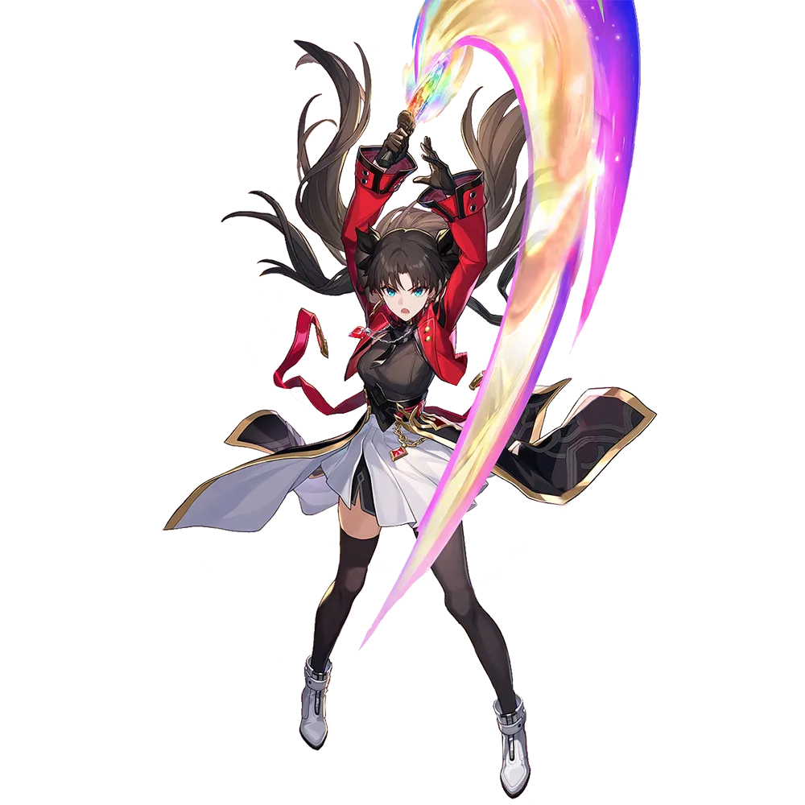

Rin Tohsaka
Best Rin Tohsaka build guide for Honkai Star Rail. See Rin Tohsaka's best Relics, Light Cones, teams, Eidolons, Trace priority, and how to play Rin Tohsaka.
🔍 Detail Skill
Semua skill aktif dan pasif beserta efeknya.
Deals Quantum DMG equal to #1[i]% of Rin Tohsaka's ATK to one designated enemy.
Deals Quantum DMG equal to #1[i]% of Rin Tohsaka's ATK to one designated enemy.
Deals Quantum DMG equal to #1[i]% of Rin Tohsaka's ATK to all enemies. Then, consumes #2[i] "Gem Energy" to additionally deal Quantum DMG equal to #3[i]% of Rin Tohsaka's ATK to one random enemy target. This repeats until "Gem Energy" is less than #2[i] or there are no enemy targets with current HP greater than 0. Can repeat up to #6[i] cycle(s). When used, if the current Skill Points are greater
Gem Magecraft When entering combat, gains 20 "Gem Energy." When an ally target consumes or recovers Skill Points, increases their CRIT DMG by #1[i]% for 2 turn(s). For every 1 Skill Point consumed or recovered, Rin Tohsaka gains 1 "Gem Energy." If Rin Tohsaka holds 15 or more "Gem Energy," or if the current Skill Points are 7 or more, her Skill is enhanced to "Second Magic Experiment." Freeform To
⚔ Light Cone Terbaik
Diurutkan dari yang paling kuat. Persentase menunjukkan performa relatif terhadap pilihan terbaik.
💎 Relic Set Terbaik
Set terbaik untuk karakter ini, diurutkan berdasarkan prioritas.
📊 Stat Utama
Stat yang dicari pada tiap slot.
👥 Tim yang Direkomendasikan
Karakter yang sering dipasangkan bersama Rin Tohsaka.
 Archer
Archer
 Sparkle
Sparkle
 Cerydra
Cerydra
🔗 Lanjutkan
Build ini dirangkum dari Prydwen Institute. Starwise tidak menghitung sendiri. Angka bisa berubah setelah patch atau karakter baru rilis.